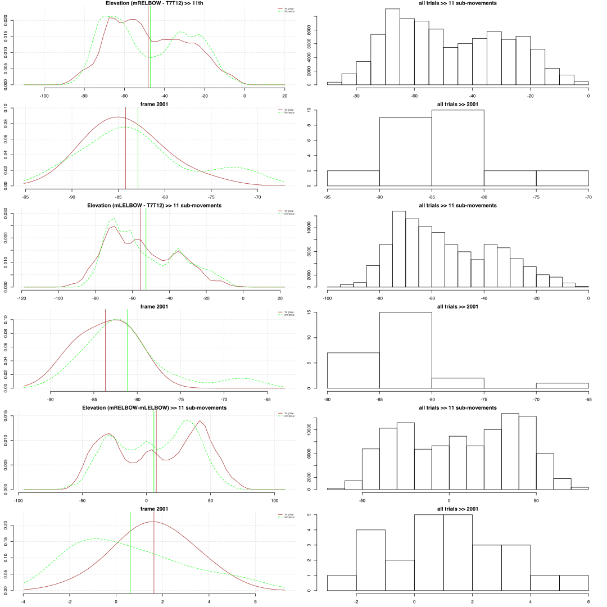
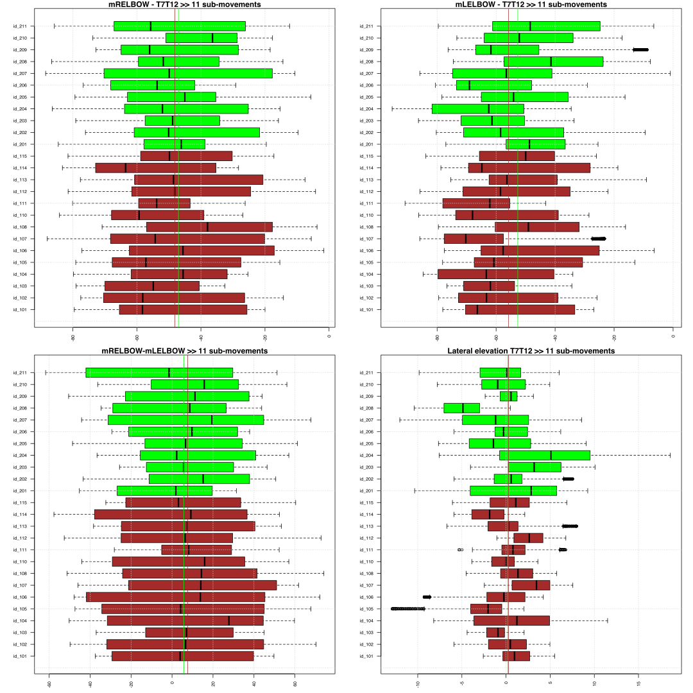
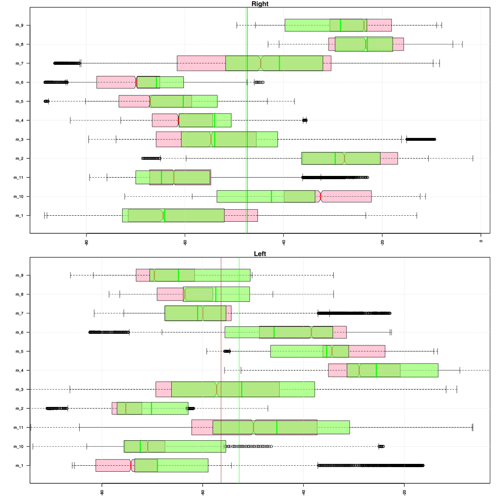
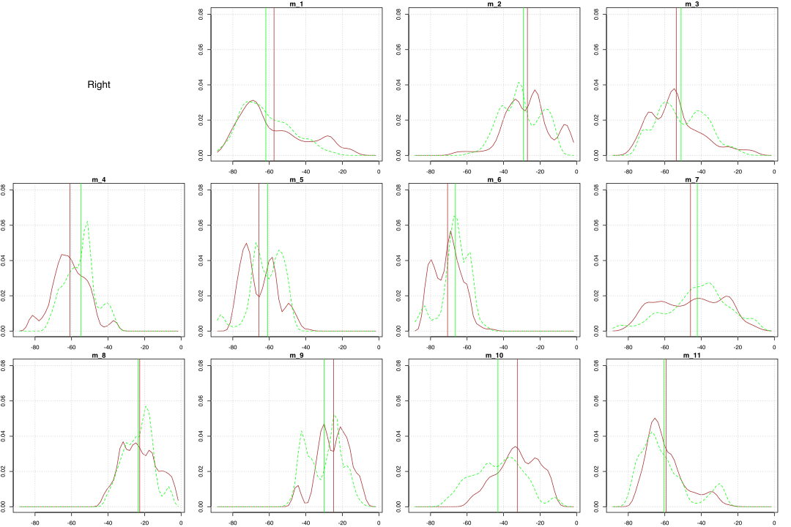
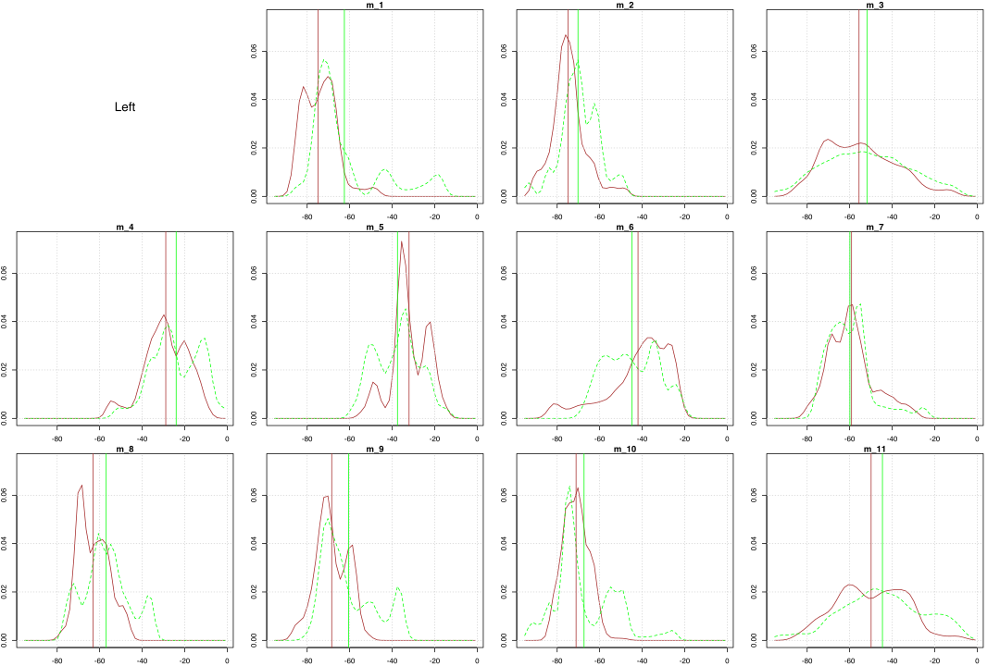
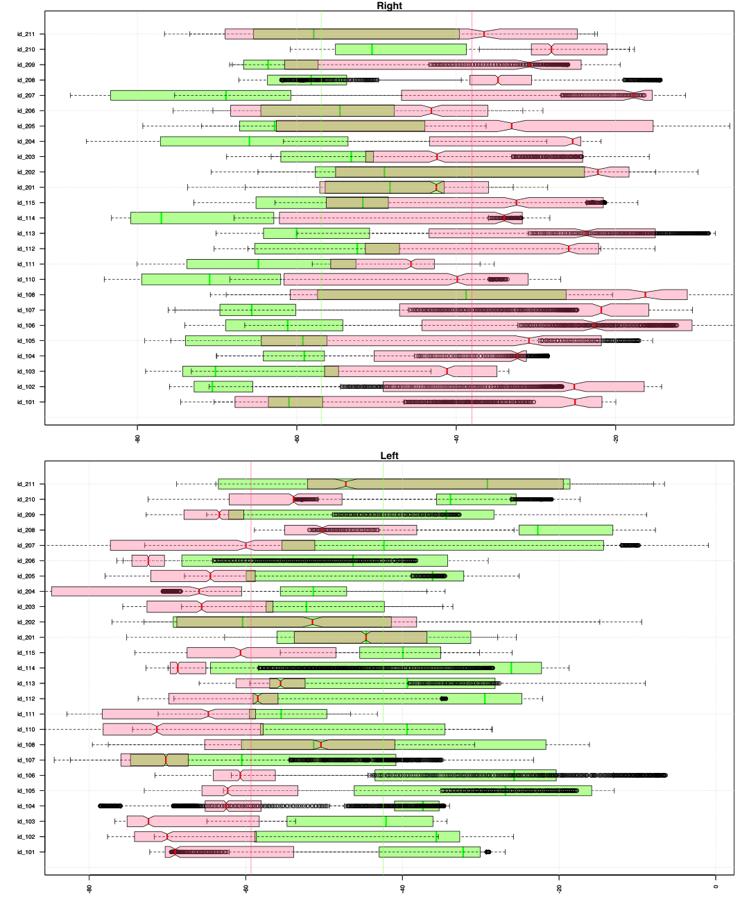
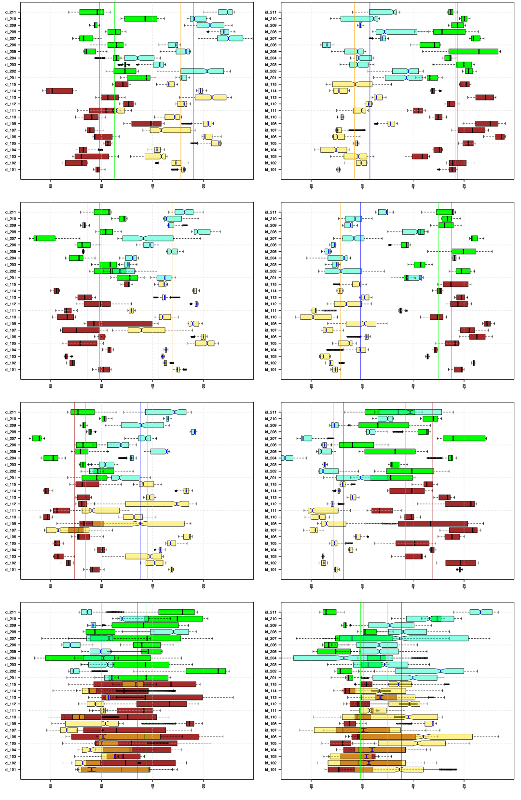

How the upper arms move relatively to the ribcage in the vertical direction?
We need to look at upper arm representations that are given by two lines that connect marker bony parts of the shoulder joints (RSH and LSH) and mid elbow markers (mRELBOW and mLELBOW). These two lines (for right and left) reflect motion of the upper arms. Thus we can estimate their vertical movement in relation to the ribcage by looking at elevation angles between the ribcage and these lines.
For the ribcage representation we take the spinal plane that represents the mid part of the ribcage (4th). This plane models a part between T7 to T12 vertebras, is perpendicular to the T12L4 line with the forward orientation that is defined by the bottom sternum marker. Thus the elevation angles are given by the 'su' points that define a lateral tilt of the ribcage (su4_2). As the 'su' points are defined on the left side of the body (positive Y-axis) we need to calculate left and right angles differently to get an estimate of how left and right upper arms are moving up and down relatively to the ribcage. For the left side we use (mLELBOW_2 - su4_2) and the right side (mRELBOW_2 + su4_2).
Summary. Motion of the upper arms relative to the vertical orientation of the ribcage
The difference in the elevation angles (mRELBOW_2-su4_2 and mLELBOW_2-su4_2) are measured relatively to the lateral elevation angle of the 4th spinal plane. So for example positive value for the arm indicates that the upper arm and the ribcage build an upward angle (the arm is raised up) whereas negative value indicate the downward angle; in other words the increasing positive value and the decreasing negative value corresponds to the upwards motion of the arm and the reverse to the downwards motion of the arm.
For the elevation angles in the 11 sub-movements we can see that in the 1st group the arms are more down (about 1 degrees) than in the 2nd and in both groups the left arm is more down (about 7.7 and 5.6 degrees in the 1st and 2nd groups correspondingly). This difference is likely to be rooted in the fact that than the sub-movements from 4th to 11th are symmetrical, the sub-movements from 1st to 3rd have the right arm higher than the left.
Elevation (mRELBOW - T7T12) >> 2nd step SF, 11 sub-movements
| mean | sd | sem | n | NAs | max | min | |
|---|---|---|---|---|---|---|---|
| 1st group | -48.13 | 20.42 | 0.086 | 56414 | 2113 | -1.613 | -87.96 |
| 2nd group | -47.01 | 18.41 | 0.088 | 43749 | 1123 | -5.694 | -88.48 |
| 2001-1st | -84.23 | 3.679 | 0.9834 | 14 | 0 | -75.78 | -89.6 |
| 2001-2nd | -82.9 | 5.956 | 1.796 | 11 | 0 | -71.75 | -90.5 |
Elevation (mLELBOW - T7T12) >> 2nd step SF, 11 sub-movements
| mean | sd | sem | n | NAs | max | min | |
|---|---|---|---|---|---|---|---|
| 1st group | -55.83 | 18.62 | 0.0784 | 56414 | 2113 | -6.378 | -90.88 |
| 2nd group | -52.65 | 19.09 | 0.0913 | 43749 | 1123 | -0.9211 | -95.25 |
| 2001-1st | -83.68 | 2.812 | 0.7515 | 14 | 0 | -79.71 | -88.05 |
| 2001-2nd | -81.12 | 5.26 | 1.586 | 11 | 0 | -67.99 | -86.89 |
Elevation (mRELBOW - mLELBOW) >> 2nd step SF, 11 sub-movements
| mean | sd | sem | n | NAs | max | min | |
|---|---|---|---|---|---|---|---|
| 1st group | 7.672 | 34.89 | 0.1442 | 58527 | 0 | 74.13 | -57.66 |
| 2nd group | 5.797 | 29.68 | 0.1401 | 44872 | 0 | 67.84 | -61.71 |
| 2001-1st | 1.63 | 1.506 | 0.4026 | 14 | 0 | 4.183 | -1.437 |
| 2001-2nd | 0.6114 | 2.421 | 0.7301 | 11 | 0 | 5.399 | -2.099 |

Than data of the 4th to 11th sub-movements is grouped by trial identities the 2nd group seems to have trials whose value ranges for the right upper arm deviate less from each other than the 1st group (e.g. green boxplots are less spread out comparing to brown). In the density plots that take only 2 symmetrical intervals (4th-11th sub-movements) we can notice that most of the trials have 2 small peaks for the left and right sides that might be connected to the fact that we have 2 prominent positions for the arms: reaching forward at chest level and being down.
Than data is grouped by 11 sub-movements as expected we can notice that arm values vary depending on the sub-movements and that the right upper arm in the 3th-7th sub-movements is lover in the 1st group than in the 2nd. For the 1st, 2nd, 9th and 10th sub-movements the right arm is lower in the 2nd group. The left arm in the 1st-4th, 11th, 8th and 9th sub-movements is lover in the 1st group than in the 2nd. The density plots describe the situation more clearly; as expected we see similarities between two laterally symmetrical intervals: 2nd row for the right resembles the 3rd row for the left (also the 1st for the left) and 3rd row for the right (with the 1st row except the 1st sub-movement ‘m_1’) resembles the 2nd row for the left. We also can notice that the forward reaching arm (the right arm in the 1st interval, 2nd row and the left arm in the 2nd interval, 3rd row) is higher in the 2nd group than in the 1st group. In contrast the arm that is directed down (the right arm in the 2nd interval, 3rd row and the left arm in the 1st interval, 2nd row) is higher in the 1st group than in the 2nd group.
Similarly than data is grouped by two intervals we can see that values for the right arm are consistently higher in the 1st interval (e.g. all red boxplots are shifted to the right from the green boxplots). And reversely values for the left arm are higher in the 2nd interval (e.g. all green boxplots are shifted to the right from the green boxplots). These relations can be explained by the lateral symmetry of the movements in 2 intervals: movement of the right arm in the 1st becomes movement of the left in the 2nd interval and vice versa. Even more clearly we can see this in the 4 x 2 boxplot panel for each of the 4 phases of the intervals. Also we can see how within one interval position of the arms swap with each other and the arm that was down becomes forward reaching and vice versa. In the last phase of intervals there is clearly more vertical movement for the forward reaching arm than the other (the right for the 1st and left for 2nd interval).
Furthermore if we look at time series we can notice in most of the trials a clear correlation between the right and left arms in two intervals (light green and red, orange and dark green). In the next plot panel we can see how the difference angle between elevation angles of the right and left upper arms (olive for the 1st interval and pink for the 2nd) and the lateral elevation angles of the ribcage (light and dark grey for the 1st and 2nd intervals) look like.
Motion of the upper arms relative to the vertical orientation of the ribcage, grouped by id-trials
Below are boxplots of the upper arm angles relative to the ribcage across different trials for the 11 sub-movements in the 2nd step of the Short Form. Brown color represents the 1st group and green the 2nd. Horizontal axes are given in degrees of the angles; the vertical axes represent grouping factor – identity of the trial. The 1st row is for the right and left angles relative to lateral tilting of the ribcage and the 2nd row is for the difference between right and left shoulders and for the lateral tilting of the ribcage.

Elevation (mRELBOW - T7T12) >> 2nd step SF, 11 sub-movements
| mean | sd | sem | n | NAs | max | min | |
|---|---|---|---|---|---|---|---|
| 1st group | -47.93 | 5.691 | 1.521 | 14 | 0 | -38.2 | -56.47 |
| 2nd group | -46.98 | 3.696 | 1.115 | 11 | 0 | -38.9 | -54.37 |
Elevation (mLELBOW - T7T12) >> 2nd step SF, 11 sub-movements
| mean | sd | sem | n | NAs | max | min | |
|---|---|---|---|---|---|---|---|
| 1st group | -55.59 | 6.031 | 1.612 | 14 | 0 | -46.8 | -65.92 |
| 2nd group | -52.78 | 7.596 | 2.29 | 11 | 0 | -40.75 | -64.81 |
Elevation (mRELBOW - mLELBOW) >> 2nd step SF, 11 sub-movements
| mean | sd | sem | n | NAs | max | min | |
|---|---|---|---|---|---|---|---|
| 1st group | 7.696 | 3.262 | 0.8719 | 14 | 0 | 14.38 | 1.732 |
| 2nd group | 5.907 | 5.121 | 1.544 | 11 | 0 | 11.01 | -4.632 |
Density plots of the angle values for the sub-movements of two symmetrical intervals (4th to 11th) grouped by the trial identities.
Brown color represents the right upper arm angles (mRELBOW - T7T12) for the 1st group and light green the 2nd; vertical lines mark mean value of the corresponding trials. The orange color represents the left angles (mLELBOW - T7T12) for the 1st group and dark green the 2nd; vertical lines mark mean value of the corresponding trials. Dark pink color represents the difference angle between the right and left (mRELBOW - mLELBOW).
Blue vertical lines mark summ of the angle values in the beginning of the form (2001-code). The dotted blue line marks the left upper arm whereas the continius blue lines the right.

Motion of the upper arms relative to the vertical orientation of the ribcage, grouped by sub-movements
Also we can look at differences in the angles across the 11 sub-movements without differentiating between individual trials. The red color represents the 1st group and green the 2nd. Horizontal axes are given in degrees of the angles and the vertical axes represent grouping factor – a number of the sub-movement.

Azimuth (mRELBOW - T7T12) >> 2nd step SF, 11 sub-movements
| mean | sd | sem | n | NAs | max | min | |
|---|---|---|---|---|---|---|---|
| 1st group | -47.33 | 17.63 | 5.315 | 11 | 0 | -22.66 | -70.68 |
| 2nd group | -47.61 | 14.98 | 4.518 | 11 | 0 | -23.51 | -66.36 |
Elevation (mLELBOW - T7T12) >> 2nd step SF, 11 sub-movements
| mean | sd | sem | n | NAs | max | min | |
|---|---|---|---|---|---|---|---|
| 1st group | -56.36 | 16.42 | 4.951 | 11 | 0 | -28.91 | -74.89 |
| 2nd group | -52.75 | 13.89 | 4.189 | 11 | 0 | -24.02 | -70.21 |
Elevation (mRELBOW-mLELBOW) >> 2nd step SF, 11 sub-movements
| mean | sd | sem | n | NAs | max | min | |
|---|---|---|---|---|---|---|---|
| 1st group | 8.619 | 33.66 | 10.15 | 11 | 0 | 49.34 | -39.2 |
| 2nd group | 4.946 | 26.88 | 8.106 | 11 | 0 | 37.91 | -30.42 |
Density plots of the angle values grouped by the 11 sub-movements. Brown color represents the 1st group and green the 2nd; vertical lines mark mean value of the corresponding sub-movement for 1st and 2nd group. The 2nd and 3rd rows capture a symmetrical motion sequence: from the left into right bow stance and from the right into left.

Motion of the upper arms relative to the vertical orientation of the ribcage, grouped by id-trials and sub-movements
Below are boxplots for two intervals of the 2nd step that capture symmetrical body motion: from the left to right bow stance and from the right to left bow stance. The boxplots of these intervals are superimposed for each of the trials. The 1st interval is marked by green color and the 2nd by red (color is not associated with groups).

Also, we can differentiate between the different sub-movements within the two intervals and look at them individually. Below are two columns of the boxplots with 4 rows that represent consecutive phases of our two intervals. The 1st column represents the movement from the left to right bow stance (4th - 7th sub-movements), the 2nd column represents the movement from the right to left bow stance (8th - 11th sub-movements).
Brown and green color mark data of the angles for the right upper arm in the 1st and 2nd group. Pale semi-transparent yellow and cyan-green colors mark angles of the left upper arm for the 1st and 2nd group.

Furthermore we can compare the actual time series for the two intervals. The figure below shows 25 plots for each of the trials with the red/orange color marking the 2nd interval and green the 1st. Vertical lines show boundaries for the four sub-movements within each interval; horizontal lines show relative angles for the right and left upper arm (green and dark green) in the 1st frame of the trial than a person is in a straight position; and a blue horizontal line marks their difference in this 1st frame of the trial.
Horizontal axis is given in frames with sampling frequency 120 frames per second.
Green colors are for the 1st interval (4-7th sub-movements; left to right bow stance) and red-like for the 2nd interval (8-11th sub-movements; right to left bow stance); darker colors are for the left upper arm and lighter colors for the right upper arm.
Right side (1-green & 2-orange), Left side (1-dark green & 2-red)

Below are the time series for the difference between the right and left upper arms (mRELBOW-mLELBOW) represened in the 1st interval in olive color and in pink color in the 2nd interval. The dotted lines in the light gray color represents lateral tilt of the ribcage in the 1st interval and in the dark gray in the 2nd.
mRELBOW-mLELBOW (1-olive & 2-dark pink), T7T12 (1-light gray, 2-dark gray)

Below are the time series for the difference between the right and left upper arms (mRELBOW_2-mLELBOW_2+su4_2) in relation to the ribcage; in other words these values represent the motion of the shoulders in relation to the lateral orientation of the ribcage. Time series for the 1st interval are in the olive color and for the 2nd interval in the pink color. The dotted lines in the light gray color represents lateral tilt of the ribcage in the 1st interval and in the dark gray in the 2nd.
mRELBOW-mLELBOW + T7T12 relative to ribcage (1-olive & 2-dark pink),
T7T12 (1-light gray, 2-dark gray)